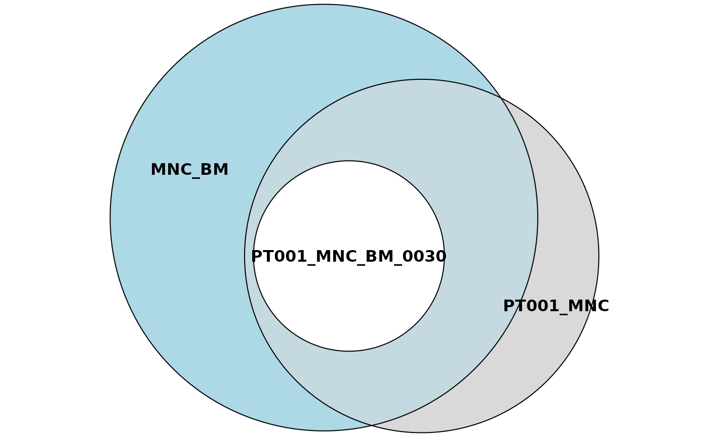
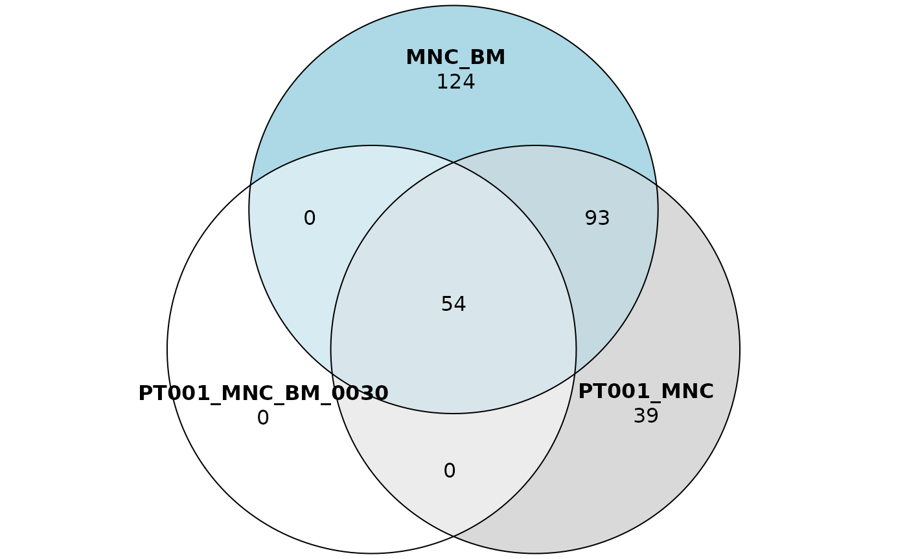

Sharing analyses with ISAnalytics
Giulia Pais
San Raffaele Telethon Institute for Gene Therapy - SR-Tiget, Via Olgettina 60, 20132 Milano - Italia
giuliapais1@gmail.com, calabria.andrea@hsr.it
3 April 2023
Source:vignettes/sharing_analyses.Rmd
sharing_analyses.RmdIntroduction
In this vignette we explain in more detail how to perform sharing analyses with ISAnalytics and its dedicated sharing functions.
Installation and options
ISAnalytics can be installed quickly in different
ways:
- You can install it via Bioconductor
- You can install it via GitHub using the package
devtools
There are always 2 versions of the package active:
-
RELEASEis the latest stable version -
DEVELis the development version, it is the most up-to-date version where all new features are introduced
Installation from bioconductor
RELEASE version:
if (!requireNamespace("BiocManager", quietly = TRUE))
install.packages("BiocManager")
BiocManager::install("ISAnalytics")DEVEL version:
if (!requireNamespace("BiocManager", quietly = TRUE))
install.packages("BiocManager")
# The following initializes usage of Bioc devel
BiocManager::install(version='devel')
BiocManager::install("ISAnalytics")Installation from GitHub
RELEASE:
if (!require(devtools)) {
install.packages("devtools")
}
devtools::install_github("calabrialab/ISAnalytics",
ref = "RELEASE_3_16",
dependencies = TRUE,
build_vignettes = TRUE)DEVEL:
if (!require(devtools)) {
install.packages("devtools")
}
devtools::install_github("calabrialab/ISAnalytics",
ref = "master",
dependencies = TRUE,
build_vignettes = TRUE)Shared integration sites
An integration site is always characterized by a triple of values:
(chr, integration_locus, strand), hence these attributes
are always present in integration matrices.
library(ISAnalytics)
data("integration_matrices")
data("association_file")#> chr integration_locus strand GeneName GeneStrand
#> 1: 16 68164148 + NFATC3 +
#> 2: 4 129390130 + LOC100507487 +
#> 3: 5 84009671 - EDIL3 -
#> 4: 12 54635693 - CBX5 -
#> 5: 5 84009671 - EDIL3 -
#> 6: 12 54635693 - CBX5 -
#> CompleteAmplificationID
#> 1: PJ01_POOL01_LTR75LC38_PT001_PT001-103_lenti_GLOBE_PB_1_SLiM_0060_MNC
#> 2: PJ01_POOL01_LTR53LC32_PT001_PT001-81_lenti_GLOBE_BM_1_SLiM_0180_MNC
#> 3: PJ01_POOL01_LTR53LC32_PT001_PT001-81_lenti_GLOBE_BM_1_SLiM_0180_MNC
#> 4: PJ01_POOL01_LTR83LC66_PT001_PT001-81_lenti_GLOBE_BM_1_SLiM_0180_MNC
#> 5: PJ01_POOL01_LTR83LC66_PT001_PT001-81_lenti_GLOBE_BM_1_SLiM_0180_MNC
#> 6: PJ01_POOL01_LTR27LC94_PT001_PT001-81_lenti_GLOBE_BM_1_SLiM_0180_MNC
#> seqCount fragmentEstimate
#> 1: 182 102.94572
#> 2: 23219 68.73747
#> 3: 20205 67.12349
#> 4: 13269 65.15760
#> 5: 14748 61.46981
#> 6: 12588 60.84781We can aggregate our data in different ways according to our needs
(to know more about this topic take a look at the vignette
vignette("workflow_start", package = "ISAnalytics")),
obtaining therefore different groups. Each group has an associated set
of integration sites.
NOTE: aggregating data is not mandatory, since sharing functions in ISAnalytics only count distinct integration sites and do not require any quantification. The only important thing is that columns that are included in the specified key are also included in the input matrices.
## Aggregation by standard key
agg <- aggregate_values_by_key(integration_matrices,
association_file,
value_cols = c("seqCount", "fragmentEstimate")
)
agg <- agg |> dplyr::filter(TimePoint %in% c("0030", "0060"))#> # A tibble: 419 × 11
#> chr integration_locus strand GeneName GeneStrand SubjectID CellMarker
#> <chr> <dbl> <chr> <chr> <chr> <chr> <chr>
#> 1 1 8464757 - RERE - PT001 MNC
#> 2 1 8464757 - RERE - PT001 MNC
#> 3 1 8607357 + RERE - PT001 MNC
#> 4 1 11339120 + UBIAD1 + PT001 MNC
#> 5 1 11339120 + UBIAD1 + PT001 MNC
#> 6 1 16186297 - SPEN + PT001 MNC
#> 7 1 16186297 - SPEN + PT001 MNC
#> 8 1 16602483 + FBXO42 - PT001 MNC
#> 9 1 25337264 - MIR4425 + PT002 MNC
#> 10 1 25337264 - MIR4425 + PT002 MNC
#> Tissue TimePoint seqCount_sum fragmentEstimate_sum
#> <chr> <chr> <dbl> <dbl>
#> 1 BM 0030 542 3.01
#> 2 BM 0060 1 1.00
#> 3 BM 0060 1 1.00
#> 4 BM 0060 1605 8.03
#> 5 PB 0060 1 1.00
#> 6 BM 0030 1 1.00
#> 7 PB 0060 1 1.00
#> 8 BM 0060 2947 9.04
#> 9 BM 0030 23 9.14
#> 10 PB 0060 36 7.07
#> # ℹ 409 more rowsAn integration site is shared between two or more groups if the same triple is observed in all the groups considered.
Automated sharing counts
ISAnalytics provides the function is_sharing() for
computing automated sharing counts. The function has several arguments
that can be tuned according to user needs.
SCENARIO 1: single input data frame and single grouping key
sharing_1 <- is_sharing(agg,
group_key = c(
"SubjectID", "CellMarker",
"Tissue", "TimePoint"
),
n_comp = 2,
is_count = TRUE,
relative_is_sharing = TRUE,
minimal = TRUE,
include_self_comp = FALSE,
keep_genomic_coord = TRUE
)
sharing_1
#> # A tibble: 28 × 10
#> g1 g2 shared count_g1 count_g2 count_union on_g1 on_g2 on_union
#> <chr> <chr> <int> <int> <int> <int> <dbl> <dbl> <dbl>
#> 1 PT001_MNC_B… PT00… 21 54 114 147 38.9 18.4 14.3
#> 2 PT001_MNC_B… PT00… 7 54 28 75 13.0 25 9.33
#> 3 PT001_MNC_B… PT00… 8 54 59 105 14.8 13.6 7.62
#> 4 PT001_MNC_B… PT00… 0 54 98 152 0 0 0
#> 5 PT001_MNC_B… PT00… 1 54 33 86 1.85 3.03 1.16
#> 6 PT001_MNC_B… PT00… 0 54 15 69 0 0 0
#> 7 PT001_MNC_B… PT00… 0 54 18 72 0 0 0
#> 8 PT001_MNC_B… PT00… 7 114 28 135 6.14 25 5.19
#> 9 PT001_MNC_B… PT00… 29 114 59 144 25.4 49.2 20.1
#> 10 PT001_MNC_B… PT00… 1 114 98 211 0.877 1.02 0.474
#> # ℹ 18 more rows
#> # ℹ 1 more variable: is_coord <list>In this configuration we set:
- A single input data frame:
agg - A single grouping key by setting the argument
grouping_key. In this specific case, our groups will be identified by a unique combination ofSubjectID,CellMarker,TissueandTimePoint -
n_comprepresents the number of comparisons to compute: 2 means we’re interested in knowing the sharing for PAIRS of distinct groups - We want to keep the counts of distinct integration sites for each
group by setting
is_counttoTRUE -
relative_is_sharingif set toTRUEadds sharing expressed as a percentage, more precisely it adds a columnon_g1that is calculated as the absolute number of shared integrations divided by the cardinality of the first group,on_g2is analogous but is computed on the cardinality of the second group and finallyon_unionis computed on the cardinality of the union of the two groups. - By setting the argument
minimaltoTRUEwe tell the function to avoid redundant comparisons: in this way only combinations and not permutations are included in the output table -
include_self_compadds rows in the table that are labelled with the same group: these rows always have a 100% sharing with all other groups. There are few scenarios where this is useful, but for now we set it toFALSEsince we don’t need it -
keep_genomic_coordallows us to keep the genomic coordinates of the shared integration sites as a separate table
Changing the number of comparisons
sharing_1_a <- is_sharing(agg,
group_key = c(
"SubjectID", "CellMarker",
"Tissue", "TimePoint"
),
n_comp = 3,
is_count = TRUE,
relative_is_sharing = TRUE,
minimal = TRUE,
include_self_comp = FALSE,
keep_genomic_coord = TRUE
)
sharing_1_a
#> # A tibble: 56 × 13
#> g1 g2 g3 shared count_g1 count_g2 count_g3 count_union on_g1 on_g2
#> <chr> <chr> <chr> <int> <int> <int> <int> <int> <dbl> <dbl>
#> 1 PT001_… PT00… PT00… 5 54 114 28 166 9.26 4.39
#> 2 PT001_… PT00… PT00… 6 54 114 59 175 11.1 5.26
#> 3 PT001_… PT00… PT00… 0 54 114 98 244 0 0
#> 4 PT001_… PT00… PT00… 0 54 114 33 179 0 0
#> 5 PT001_… PT00… PT00… 0 54 114 15 161 0 0
#> 6 PT001_… PT00… PT00… 0 54 114 18 165 0 0
#> 7 PT001_… PT00… PT00… 1 54 28 59 117 1.85 3.57
#> 8 PT001_… PT00… PT00… 0 54 28 98 173 0 0
#> 9 PT001_… PT00… PT00… 0 54 28 33 107 0 0
#> 10 PT001_… PT00… PT00… 0 54 28 15 90 0 0
#> # ℹ 46 more rows
#> # ℹ 3 more variables: on_g3 <dbl>, on_union <dbl>, is_coord <list>Changing the n_comp to 3 means that we want to calculate
the sharing between 3 different groups. Note that the
shared column contains the counts of integrations that are
shared by ALL groups, which is equivalent to a set
intersection.
Beware of the fact that the more comparisons are requested the more time the computation requires.
A case when it is useful to set minimal = FALSE
Setting minimal = FALSE produces all possible
permutations of the groups and the corresponding values. In combination
with include_self_comp = TRUE, this is useful when we want
to know the sharing between pairs of groups and plot results as a
heatmap.
sharing_1_b <- is_sharing(agg,
group_key = c(
"SubjectID", "CellMarker",
"Tissue", "TimePoint"
),
n_comp = 2,
is_count = TRUE,
relative_is_sharing = TRUE,
minimal = FALSE,
include_self_comp = TRUE
)
sharing_1_b
#> # A tibble: 64 × 9
#> g1 g2 shared count_g1 count_g2 count_union on_g1 on_g2 on_union
#> <chr> <chr> <int> <int> <int> <int> <dbl> <dbl> <dbl>
#> 1 PT001_MNC_BM… PT00… 54 54 54 54 100 100 100
#> 2 PT001_MNC_BM… PT00… 114 114 114 114 100 100 100
#> 3 PT001_MNC_PB… PT00… 59 59 59 59 100 100 100
#> 4 PT002_MNC_BM… PT00… 98 98 98 98 100 100 100
#> 5 PT002_MNC_PB… PT00… 18 18 18 18 100 100 100
#> 6 PT002_MNC_PB… PT00… 15 15 15 15 100 100 100
#> 7 PT001_MNC_PB… PT00… 28 28 28 28 100 100 100
#> 8 PT002_MNC_BM… PT00… 33 33 33 33 100 100 100
#> 9 PT001_MNC_BM… PT00… 21 54 114 147 38.9 18.4 14.3
#> 10 PT001_MNC_BM… PT00… 21 114 54 147 18.4 38.9 14.3
#> # ℹ 54 more rows
heatmaps <- sharing_heatmap(sharing_1_b)The function sharing_heatmap() automatically plots
sharing between 2 groups. There are several arguments to this function
that allow us to obtain heatmaps for the absolute sharing values or the
relative (percentage) values.
heatmaps$absolute
heatmaps$on_g1
heatmaps$on_union
Beware of the fact that calculating all permutations takes longer
than calculating only distinct combinations, therefore if you don’t need
your results plotted or you have more than 2 groups to compare you
should stick with minimal = TRUE and
include_self_comp = FALSE.
SCENARIO 2: single input data frame and multiple grouping keys
In the first scenario, groups were homogeneous, that is, they were
grouped all with the same key. In this other scenario we want to start
with data contained in just one data frame but we want to compare sets
of integrations that are grouped differently. To do this we give as
input a list of keys through the argument
group_keys.
sharing_2 <- is_sharing(agg,
group_keys = list(
g1 = c(
"SubjectID", "CellMarker",
"Tissue", "TimePoint"
),
g2 = c("SubjectID", "CellMarker"),
g3 = c("CellMarker", "Tissue")
)
)
sharing_2
#> # A tibble: 32 × 12
#> g1 g2 g3 shared count_g1 count_g2 count_g3 count_union on_g1 on_g2
#> <chr> <chr> <chr> <int> <int> <int> <int> <int> <dbl> <dbl>
#> 1 PT00… PT00… MNC_… 54 54 186 271 310 100 29.0
#> 2 PT00… PT00… MNC_… 14 54 186 103 211 25.9 7.53
#> 3 PT00… PT00… MNC_… 1 54 137 271 281 1.85 0.730
#> 4 PT00… PT00… MNC_… 0 54 137 103 252 0 0
#> 5 PT00… PT00… MNC_… 114 114 186 271 310 100 61.3
#> 6 PT00… PT00… MNC_… 35 114 186 103 211 30.7 18.8
#> 7 PT00… PT00… MNC_… 2 114 137 271 281 1.75 1.46
#> 8 PT00… PT00… MNC_… 2 114 137 103 292 1.75 1.46
#> 9 PT00… PT00… MNC_… 9 28 186 271 310 32.1 4.84
#> 10 PT00… PT00… MNC_… 28 28 186 103 211 100 15.1
#> # ℹ 22 more rows
#> # ℹ 2 more variables: on_g3 <dbl>, on_union <dbl>There are a few things to keep in mind in this case:
- The arguments
group_key(notice the absence of plural),n_compandinclude_self_compare ignored: the number of comparisons is automatically detected by counting the provided keys and a self comparison doesn’t make sense since group labels are different - If you provide a list of identical keys or just one key you fall back to scenario 1
SCENARIO 3: multiple input data frame and single grouping key
Providing multiple input data frames and the same grouping key is an
effective way to reduce the number of comparisons performed. Let’s make
an example: suppose we’re interested in comparing groups labelled by a
unique combination of SubjectID, CellMarker,
Tissue and TimePoint, but this time we want
the first group to contain only integrations relative to
PT001_MNC_BM_0030 and the second group to contain only
integrations relative to PT001_MNC_BM_0060.
We’re going to filter the original data frame in order to obtain only relevant data in 2 separated tables and then proceed by calling the function.
first_sample <- agg |>
dplyr::filter(
SubjectID == "PT001", CellMarker == "MNC", Tissue == "BM",
TimePoint == "0030"
)
second_sample <- agg |>
dplyr::filter(
SubjectID == "PT001", CellMarker == "MNC", Tissue == "BM",
TimePoint == "0060"
)
sharing_3 <- is_sharing(first_sample, second_sample,
group_key = c(
"SubjectID", "CellMarker",
"Tissue", "TimePoint"
),
is_count = TRUE,
relative_is_sharing = TRUE,
minimal = TRUE
)
sharing_3
#> # A tibble: 1 × 9
#> g1 g2 shared count_g1 count_g2 count_union on_g1 on_g2 on_union
#> <chr> <chr> <int> <int> <int> <int> <dbl> <dbl> <dbl>
#> 1 PT001_MNC_BM_… PT00… 21 54 114 147 38.9 18.4 14.3Once again the arguments n_comp and
include_self_comp are ignored: the number of comparisons is
equal to the number of data frames in input.
To handle special limit cases, the output group ids are appended with
a dash and a number (-1, -2, …) that indicates
the data frame of origin: this is useful in the case group ids are
duplicated in the inputs. To understand better let’s make an
example:
sharing_3_a <- is_sharing(
first_sample, second_sample,
group_key = c(
"CellMarker", "Tissue"
),
is_count = TRUE,
relative_is_sharing = TRUE,
minimal = FALSE
)
sharing_3_a
#> # A tibble: 2 × 9
#> g1 g2 shared count_g1 count_g2 count_union on_g1 on_g2 on_union
#> <chr> <chr> <int> <int> <int> <int> <dbl> <dbl> <dbl>
#> 1 MNC_BM-1 MNC_BM-2 21 54 114 147 38.9 18.4 14.3
#> 2 MNC_BM-2 MNC_BM-1 21 114 54 147 18.4 38.9 14.3As you can see, the IDs of group 1 and group 2 are duplicated and without a suffix it would be impossible to know which one came from which data frame. In this way we know that the group “MNC_BM-1” comes from table 1 and has 54 ISs, while “MNC_BM-2” comes from the second input table and has 114 ISs.
SCENARIO 4: multiple input data frame and multiple grouping keys
Finally, the most general scenario is when we have multiple data frames with multiple keys. In this case the number of data frames must be equal to the number of provided keys and grouping keys are applied in order ( data frame 1 is grouped with key 1, data frame 2 is grouped with key 2, and so on).
df1 <- agg |>
dplyr::filter(TimePoint == "0030")
df2 <- agg |>
dplyr::filter(TimePoint == "0060")
df3 <- agg |>
dplyr::filter(Tissue == "BM")
keys <- list(
g1 = c("SubjectID", "CellMarker", "Tissue"),
g2 = c("SubjectID", "Tissue"),
g3 = c("SubjectID", "CellMarker", "Tissue")
)
sharing_4 <- is_sharing(df1, df2, df3, group_keys = keys)
sharing_4
#> # A tibble: 32 × 12
#> g1 g2 g3 shared count_g1 count_g2 count_g3 count_union on_g1 on_g2
#> <chr> <chr> <chr> <int> <int> <int> <int> <int> <dbl> <dbl>
#> 1 PT001_… PT00… PT00… 21 54 114 147 147 38.9 18.4
#> 2 PT001_… PT00… PT00… 0 54 114 126 271 0 0
#> 3 PT001_… PT00… PT00… 8 54 59 147 175 14.8 13.6
#> 4 PT001_… PT00… PT00… 0 54 59 126 229 0 0
#> 5 PT001_… PT00… PT00… 1 54 33 147 179 1.85 3.03
#> 6 PT001_… PT00… PT00… 1 54 33 126 179 1.85 3.03
#> 7 PT001_… PT00… PT00… 0 54 18 147 165 0 0
#> 8 PT001_… PT00… PT00… 0 54 18 126 185 0 0
#> 9 PT001_… PT00… PT00… 7 28 114 147 166 25 6.14
#> 10 PT001_… PT00… PT00… 0 28 114 126 260 0 0
#> # ℹ 22 more rows
#> # ℹ 2 more variables: on_g3 <dbl>, on_union <dbl>Notice that in this example the keys for g1 and g3 are the same, meaning the labels of the groups are actually the same, however you should remember that the groups contain a different set of integration sites since they come from different data frames.
Plotting sharing results
When we have more than 2 comparisons it is convenient to plot them as
venn or euler diagrams. ISAnalytics has a fast way to do that through
the functions is_sharing() and
sharing_venn().
sharing_5 <- is_sharing(agg,
group_keys = list(
g1 = c(
"SubjectID", "CellMarker",
"Tissue", "TimePoint"
),
g2 = c("SubjectID", "CellMarker"),
g3 = c("CellMarker", "Tissue")
), table_for_venn = TRUE
)
sharing_5
#> # A tibble: 32 × 13
#> g1 g2 g3 shared count_g1 count_g2 count_g3 count_union on_g1 on_g2
#> <chr> <chr> <chr> <int> <int> <int> <int> <int> <dbl> <dbl>
#> 1 PT00… PT00… MNC_… 54 54 186 271 310 100 29.0
#> 2 PT00… PT00… MNC_… 14 54 186 103 211 25.9 7.53
#> 3 PT00… PT00… MNC_… 1 54 137 271 281 1.85 0.730
#> 4 PT00… PT00… MNC_… 0 54 137 103 252 0 0
#> 5 PT00… PT00… MNC_… 114 114 186 271 310 100 61.3
#> 6 PT00… PT00… MNC_… 35 114 186 103 211 30.7 18.8
#> 7 PT00… PT00… MNC_… 2 114 137 271 281 1.75 1.46
#> 8 PT00… PT00… MNC_… 2 114 137 103 292 1.75 1.46
#> 9 PT00… PT00… MNC_… 9 28 186 271 310 32.1 4.84
#> 10 PT00… PT00… MNC_… 28 28 186 103 211 100 15.1
#> # ℹ 22 more rows
#> # ℹ 3 more variables: on_g3 <dbl>, on_union <dbl>, truth_tbl_venn <list>The argument table_for_venn = TRUE will add a new column
truth_tbl_venn that contains corresponding truth tables for
each row.
sharing_plots1 <- sharing_venn(sharing_5, row_range = 1, euler = TRUE)
sharing_plots2 <- sharing_venn(sharing_5, row_range = 1, euler = FALSE)Say that we’re interested in plotting just the first row of our
sharing data frame. Then we can call the function
sharing_venn and specify in the row_range
argument the index 1. Note that this function requires the package
eulerr
to work. The argument euler indicates if the function
should produce euler or venn diagrams instead.
Once obtained the lists of euler/venn objects we can plot them by
simply calling the function plot():
plot(sharing_plots1[[1]])
plot(sharing_plots2[[1]])
There are several options that can be set, for this please refer to eulerr docs.
Reproducibility
R session information.
#> ─ Session info ───────────────────────────────────────────────────────────────────────────────────────────────────────
#> setting value
#> version R version 4.2.3 (2023-03-15)
#> os Ubuntu 22.04.2 LTS
#> system x86_64, linux-gnu
#> ui X11
#> language en
#> collate C.UTF-8
#> ctype C.UTF-8
#> tz UTC
#> date 2023-04-03
#> pandoc 2.19.2 @ /usr/bin/ (via rmarkdown)
#>
#> ─ Packages ───────────────────────────────────────────────────────────────────────────────────────────────────────────
#> package * version date (UTC) lib source
#> backports 1.4.1 2021-12-13 [1] RSPM
#> bibtex 0.5.1 2023-01-26 [1] RSPM
#> BiocManager 1.30.20 2023-02-24 [1] RSPM
#> BiocParallel 1.32.6 2023-03-17 [1] Bioconductor
#> BiocStyle * 2.26.0 2022-11-01 [1] Bioconductor
#> bookdown 0.33 2023-03-06 [1] RSPM
#> bslib 0.4.2 2022-12-16 [1] RSPM
#> cachem 1.0.7 2023-02-24 [1] RSPM
#> cellranger 1.1.0 2016-07-27 [1] RSPM
#> cli 3.6.1 2023-03-23 [1] RSPM
#> codetools 0.2-19 2023-02-01 [3] CRAN (R 4.2.3)
#> colorspace 2.1-0 2023-01-23 [1] RSPM
#> curl 5.0.0 2023-01-12 [1] RSPM
#> data.table 1.14.8 2023-02-17 [1] RSPM
#> datamods 1.4.0 2022-11-24 [1] RSPM
#> desc 1.4.2 2022-09-08 [1] RSPM
#> digest 0.6.31 2022-12-11 [1] RSPM
#> doFuture 1.0.0 2023-03-24 [1] RSPM
#> dplyr 1.1.1 2023-03-22 [1] RSPM
#> ellipsis 0.3.2 2021-04-29 [1] RSPM
#> eulerr 7.0.0 2022-12-10 [1] RSPM
#> evaluate 0.20 2023-01-17 [1] RSPM
#> fansi 1.0.4 2023-01-22 [1] RSPM
#> farver 2.1.1 2022-07-06 [1] RSPM
#> fastmap 1.1.1 2023-02-24 [1] RSPM
#> forcats 1.0.0 2023-01-29 [1] RSPM
#> foreach 1.5.2 2022-02-02 [1] RSPM
#> foreign 0.8-84 2022-12-06 [3] CRAN (R 4.2.3)
#> fs 1.6.1 2023-02-06 [1] RSPM
#> future 1.32.0 2023-03-07 [1] RSPM
#> future.apply 1.10.0 2022-11-05 [1] RSPM
#> generics 0.1.3 2022-07-05 [1] RSPM
#> ggplot2 3.4.1 2023-02-10 [1] RSPM
#> globals 0.16.2 2022-11-21 [1] RSPM
#> glue 1.6.2 2022-02-24 [1] RSPM
#> gtable 0.3.3 2023-03-21 [1] RSPM
#> gtools 3.9.4 2022-11-27 [1] RSPM
#> haven 2.5.2 2023-02-28 [1] RSPM
#> highr 0.10 2022-12-22 [1] RSPM
#> hms 1.1.3 2023-03-21 [1] RSPM
#> htmltools 0.5.5 2023-03-23 [1] RSPM
#> htmlwidgets 1.6.2 2023-03-17 [1] RSPM
#> httpuv 1.6.9 2023-02-14 [1] RSPM
#> httr 1.4.5 2023-02-24 [1] RSPM
#> ISAnalytics * 1.8.3 2023-04-03 [1] local
#> iterators 1.0.14 2022-02-05 [1] RSPM
#> jquerylib 0.1.4 2021-04-26 [1] RSPM
#> jsonlite 1.8.4 2022-12-06 [1] RSPM
#> knitr 1.42 2023-01-25 [1] RSPM
#> later 1.3.0 2021-08-18 [1] RSPM
#> lifecycle 1.0.3 2022-10-07 [1] RSPM
#> listenv 0.9.0 2022-12-16 [1] RSPM
#> lubridate 1.9.2 2023-02-10 [1] RSPM
#> magrittr 2.0.3 2022-03-30 [1] RSPM
#> memoise 2.0.1 2021-11-26 [1] RSPM
#> mime 0.12 2021-09-28 [1] RSPM
#> munsell 0.5.0 2018-06-12 [1] RSPM
#> openxlsx 4.2.5.2 2023-02-06 [1] RSPM
#> parallelly 1.35.0 2023-03-23 [1] RSPM
#> phosphoricons 0.1.2 2022-04-11 [1] RSPM
#> pillar 1.9.0 2023-03-22 [1] RSPM
#> pkgconfig 2.0.3 2019-09-22 [1] RSPM
#> pkgdown 2.0.7 2022-12-14 [1] any (@2.0.7)
#> plyr 1.8.8 2022-11-11 [1] RSPM
#> polyclip 1.10-4 2022-10-20 [1] RSPM
#> polylabelr 0.2.0 2020-04-19 [1] RSPM
#> progressr 0.13.0 2023-01-10 [1] RSPM
#> promises 1.2.0.1 2021-02-11 [1] RSPM
#> purrr 1.0.1 2023-01-10 [1] RSPM
#> R6 2.5.1 2021-08-19 [1] RSPM
#> ragg 1.2.5 2023-01-12 [1] RSPM
#> Rcpp 1.0.10 2023-01-22 [1] RSPM
#> reactable 0.4.4 2023-03-12 [1] RSPM
#> readr 2.1.4 2023-02-10 [1] RSPM
#> readxl 1.4.2 2023-02-09 [1] RSPM
#> RefManageR * 1.4.0 2022-09-30 [1] RSPM
#> rio 0.5.29 2021-11-22 [1] RSPM
#> rlang 1.1.0 2023-03-14 [1] RSPM
#> rmarkdown 2.21 2023-03-26 [1] RSPM
#> rprojroot 2.0.3 2022-04-02 [1] RSPM
#> sass 0.4.5 2023-01-24 [1] RSPM
#> scales 1.2.1 2022-08-20 [1] RSPM
#> sessioninfo * 1.2.2 2021-12-06 [1] RSPM
#> shiny 1.7.4 2022-12-15 [1] RSPM
#> shinybusy 0.3.1 2022-05-10 [1] RSPM
#> shinyWidgets 0.7.6 2023-01-08 [1] RSPM
#> stringi 1.7.12 2023-01-11 [1] RSPM
#> stringr 1.5.0 2022-12-02 [1] RSPM
#> systemfonts 1.0.4 2022-02-11 [1] RSPM
#> textshaping 0.3.6 2021-10-13 [1] RSPM
#> tibble 3.2.1 2023-03-20 [1] RSPM
#> tidyr 1.3.0 2023-01-24 [1] RSPM
#> tidyselect 1.2.0 2022-10-10 [1] RSPM
#> timechange 0.2.0 2023-01-11 [1] RSPM
#> tzdb 0.3.0 2022-03-28 [1] RSPM
#> utf8 1.2.3 2023-01-31 [1] RSPM
#> vctrs 0.6.1 2023-03-22 [1] RSPM
#> withr 2.5.0 2022-03-03 [1] RSPM
#> writexl 1.4.2 2023-01-06 [1] RSPM
#> xfun 0.38 2023-03-24 [1] RSPM
#> xml2 1.3.3 2021-11-30 [1] RSPM
#> xtable 1.8-4 2019-04-21 [1] RSPM
#> yaml 2.3.7 2023-01-23 [1] RSPM
#> zip 2.2.2 2022-10-26 [1] RSPM
#>
#> [1] /home/runner/work/_temp/Library
#> [2] /opt/R/4.2.3/lib/R/site-library
#> [3] /opt/R/4.2.3/lib/R/library
#>
#> ──────────────────────────────────────────────────────────────────────────────────────────────────────────────────────Bibliography
This vignette was generated using BiocStyle (Oleś, 2022) with knitr (Xie, 2023) and rmarkdown (Allaire, Xie, Dervieux, McPherson, Luraschi, Ushey, Atkins, Wickham, Cheng, Chang, and Iannone, 2023) running behind the scenes.
Citations made with RefManageR (McLean, 2017).
[1] J. Allaire, Y. Xie, C. Dervieux, et al. rmarkdown: Dynamic Documents for R. R package version 2.21. 2023. URL: https://github.com/rstudio/rmarkdown.
[2] M. W. McLean. “RefManageR: Import and Manage BibTeX and BibLaTeX References in R”. In: The Journal of Open Source Software (2017). DOI: 10.21105/joss.00338.
[3] A. Oleś. BiocStyle: Standard styles for vignettes and other Bioconductor documents. R package version 2.26.0. 2022. URL: https://github.com/Bioconductor/BiocStyle.
[4] Y. Xie. knitr: A General-Purpose Package for Dynamic Report Generation in R. R package version 1.42. 2023. URL: https://yihui.org/knitr/.